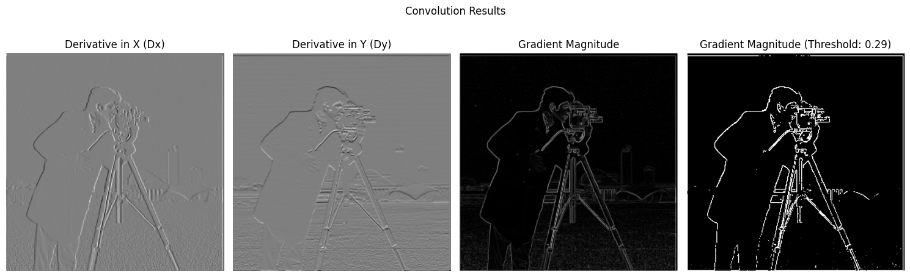
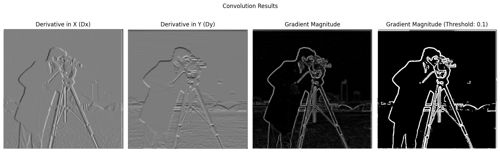
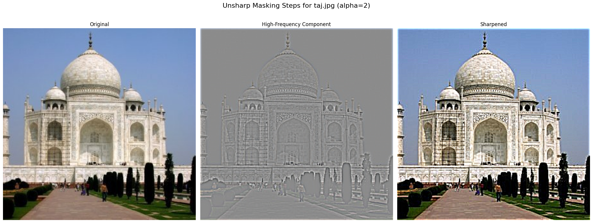
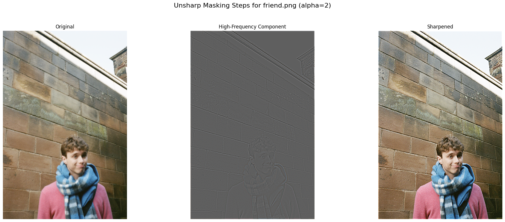

Part 1: Fun with Filters
Part 1.1: Convolutions from Scratch!
I implemented 2D convolution first with four for-loops, and then more efficiently with two for-loops by vectorizing the kernel multiplication. To handle boundaries, I used zero-padding, which prevents artifacts at the image edges. Based on the runtimes I've listed below, the built-in signal.convolve2d is much better optimized than either of my implementations.
Execution Runtime:
convolve_four_loops : 47.0858 seconds
convolve_two_loops : 7.9763 seconds
signal.convolve2d : 0.2208 seconds
def convolve_four_loops(image, kernel):
im_height, im_width = image.shape
k_height, k_width = kernel.shape
pad_h = k_height // 2
pad_w = k_width // 2
pad_im = np.zeros((im_height + 2*pad_h, im_width + 2*pad_w))
pad_im[pad_h : im_height + pad_h, pad_w: im_width + pad_w] = image
convolved = np.zeros_like(image)
for j in range(im_height):
for i in range(im_width):
total_product = 0.0
for kj in range(k_height):
for ki in range(k_width):
img_j = j + kj
img_i = i + ki
product = pad_im[img_j, img_i] * kernel[kj, ki]
total_product += product
convolved[j, i] = total_product
return convolved
def convolve_two_loops(image, kernel):
im_height, im_width = image.shape
k_height, k_width = kernel.shape
pad_h = k_height // 2
pad_w = k_width // 2
pad_im = np.zeros((im_height + 2*pad_h, im_width + 2*pad_w))
pad_im[pad_h : im_height + pad_h, pad_w: im_width + pad_w] = image
convolved = np.zeros_like(image)
for j in range(im_height):
for i in range(im_width):
extracted_patch = pad_im[j : j + k_height, i : i + k_width]
convolved[j, i] = np.sum(extracted_patch * kernel)
return convolved
Part 1.2: Finite Difference Operator
Convolving the finite difference operators isolates vertical and horizontal edges in the target image. Combining these gives the gradient magnitude, which reveals our image edges. To remove noise, I binarized the magnitude image with a threshold 0.29 which I thought removed most background noise while prioritizing the cameraman's outline.

Part 1.3: Derivative of Gaussian (DoG) Filter
To improve the noise from Part 1.2, we first smooth the image with a Gaussian filter before applying the derivative operators. This low-pass filtering removes noise, resulting in a much cleaner edge map. With the Gaussian applied, my binarization threshold became 0.10.

The project spec highlights this is equivalent to a single convolution with a Derivative of Gaussian (DoG) filter, which produces an identical result more efficiently. Comparing the procedure of first applying the Gaussian then the finite difference operators versus a single DoG convolution, the magnitudes are identical.
Part 2: Fun with Frequencies
Part 2.1: Image "Sharpening"
Image sharpening is achieved using an unsharp mask filter. The process starts by creating a blurred, low-frequency version of the image with a Gaussian filter. Subtracting this blurred image from the original isolates the high-frequency component (the edges). A scaled portion of these details, controlled by the parameter alpha, is then added back to the original image to make it appear sharper. A higher alpha results in a more pronounced sharpening effect.
Taj Mahal
Varying the alpha value clearly shows how adding more of the high-frequency component increases sharpness:

Self-Portrait (deliberately blurred)
Here, I took a sharp image, blurred it with a Gaussian filter, and then applied the unsharp mask filter. The process successfully recovered much of the original sharpness.
Friend

Part 2.3: Gaussian and Laplacian Stacks
To prepare for seamless blending, I implemented Gaussian and Laplacian stacks. A Gaussian stack is a series of progressively blurred images. A Laplacian stack stores the difference between levels of the Gaussian stack, effectively isolating image details at different frequency bands. Below is a recreation of the visualization from the reference paper, showing different levels of the stacks.
Part 2.4: Multiresolution Blending
Multiresolution blending stitches two images together flawlessly. First, I decompose both images into Laplacian stacks to separate their frequency bands. Then, I create a Gaussian stack from the blending mask to produce smooth transitions at each scale. Finally, I use the smoothed masks to combine the corresponding levels of the Laplacian stacks and collapse the result back into a single, seamless image. This per-frequency blending avoids the harsh seams that appear with simple pasting.
Apple-Orange Blend (Vertical Seam):
Full Stacks for Oraple
Galaxy-Poppy Field (Irregular Seam):
Boat-Wave (Irregular Seam):